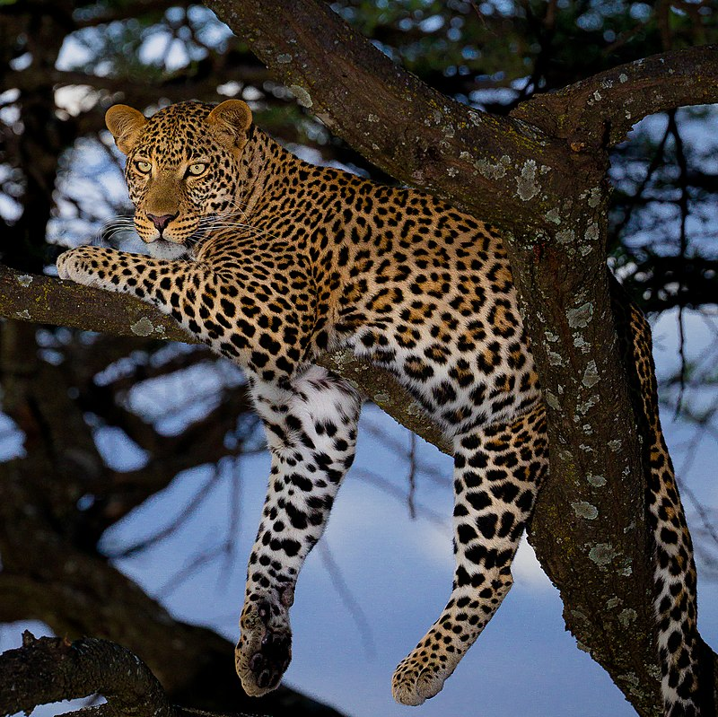

| Caractéristiques |
Guépard |
Léopard |
| Taille |
1,6 à 1,9 mètres de longueur (sans la queue), la queue ajoutant environ 0,6 à 1,1 mètres |
1,1 à 1,5 mètres de longueur (sans la queue), la queue ajoutant environ 0,6 à 0,8 mètres |
| Poids |
Mâles : 30 à 80 kg
Femelles : 20 à 60 kg |
Mâles : 34 à 54 kg
Femelles : 29 à 44 kg |
| Pelage |
Rosettes noires sur fond jaune doré |
Taches noires rondes uniformes sur fond fauve |
| Habitat |
Forêts tropicales, savanes, montagnes, et régions arides |
Afrique, petite population en Iran |
| Répartition |
Afrique subsaharienne, petites populations en Asie |
Taches noires rondes uniformes sur fond fauve |
| Vitesse de course |
Jusqu'à 58 km/h pour de courtes distances |
Jusqu'à 112 km/h, le mammifère terrestre le plus rapide |
| Techniques de chasse |
Embuscade et attaque de près, excellent grimpeur |
Course à haute vitesse pour capturer des proies en terrain ouvert |
| Comportement social |
Principalement solitaire |
Généralement solitaire, mais les mâles peuvent former de petites coalitions de frères |
| Reproduction |
Maturité sexuelle à 2-3 ans, gestation de 90-105 jours, portée de 2 à 4 petits |
Maturité sexuelle à environ 2 ans, gestation de 90-95 jours, portée de 3 à 5 petits |
| Adaptations physiques |
Corps robuste, pattes puissantes, bonnes capacités de grimpe |
Corps élancé, pattes longues et fines, grandes narines et poumons pour l'endurance de la course |
| Statut de conservation |
Vulnérable (selon l'UICN) |
Vulnérable (selon l'UICN) |
| Prédateurs naturels |
Lions, hyènes, humains |
Lions, hyènes, léopards, humains |
| Image |
|
 |